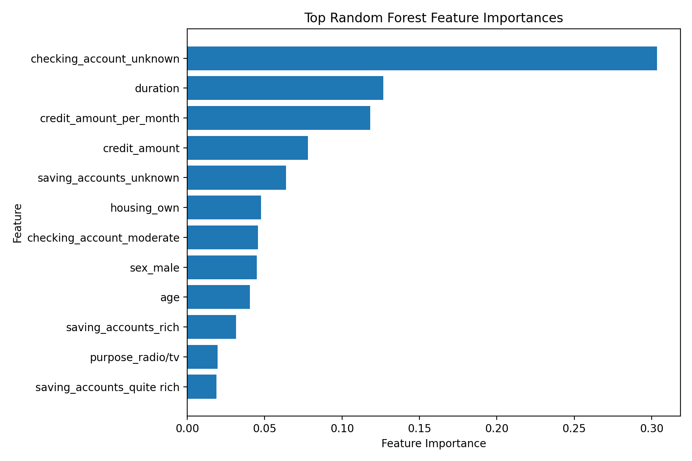
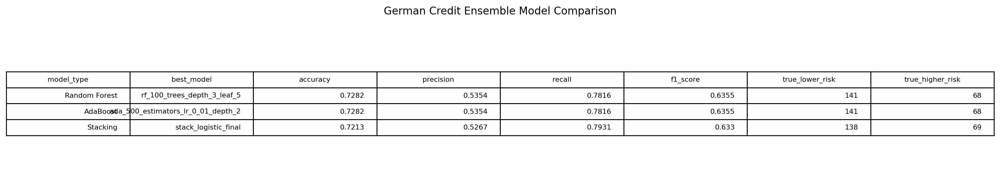
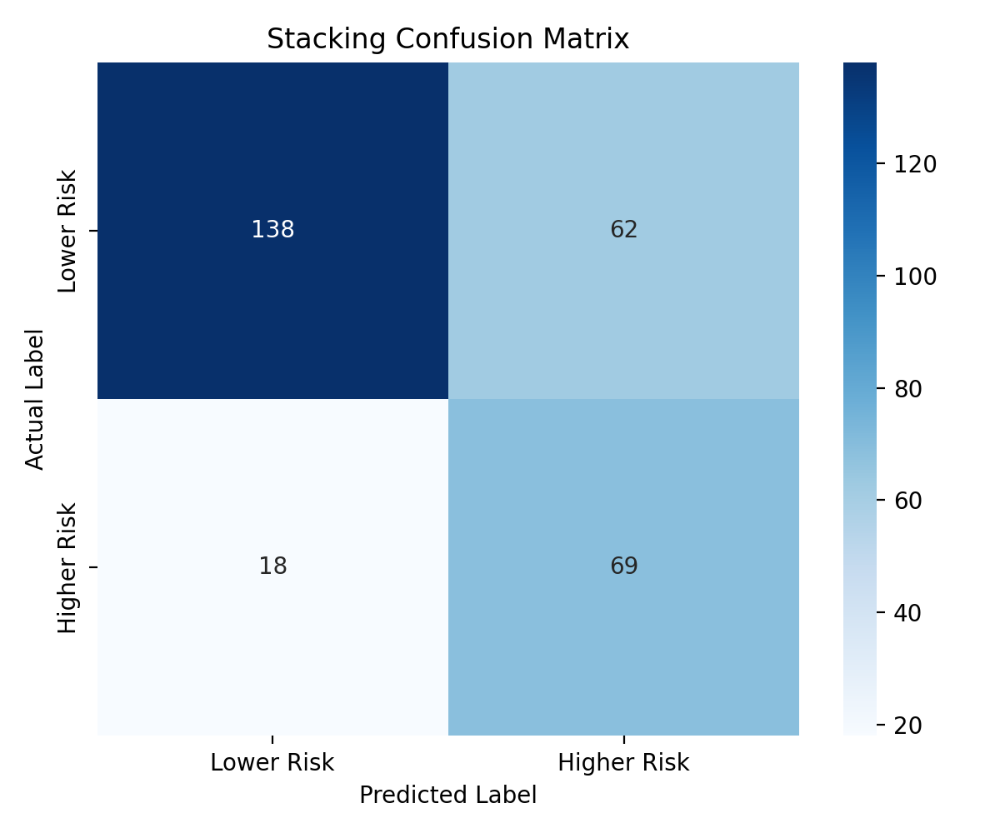

CS 432 Project Journal
Module 9 - Ensemble Methods, Bagging, Boosting and Stacking
Combining many models three different ways to squeeze out the strongest credit risk classifier of the project.
Strength in numbers
Every classifier up to this point was a single model, and each had its own blind spots. Ensemble methods take a different bet, that a crowd of models can cover for one another and land somewhere better than any of them alone. There are three distinct ways to build that crowd, and I worked through all of them on the German Credit data with the same lower and higher risk label, 24 predictors, and the familiar split of 667 training and 287 testing borrowers, so the results would sit cleanly beside the earlier modules.
The three strategies are not variations on one theme, which is the part worth getting straight. Bagging trains many models in parallel on different random slices of the data and lets them vote, which tames the wild swings of any one model. Boosting trains models in sequence, each one focused on the mistakes the last one made, gradually sharpening the weak spots. Stacking is different again, training several different kinds of models and then handing their predictions to one final model that learns how to best combine them. I picked a representative of each.
Random forest, the bagging approach
Random forest is bagging built out of decision trees, growing a whole forest on random slices of the data and random subsets of features so the trees stay varied rather than copying each other. I swept across 36 combinations of tree count, depth, and leaf size to find a good one. The winner was a fairly modest forest of 100 shallow trees, which reached about 73 percent accuracy with a recall near 78 percent and the best F1 score of anything I had built, around 0.64. Its confusion matrix correctly cleared 141 lower risk borrowers and caught 68 of the higher risk ones while missing only 19, the cleanest balance in the project to that point.
The forest's feature importances were a familiar refrain by now. An unknown checking account led at about 0.30, with loan duration and the monthly burden feature close behind. The same handful of signals that had surfaced in clustering, the trees, and the SVM came back yet again, which gave me real confidence they were structural facts about the data rather than quirks of one method.

AdaBoost, and a quiet surprise
For boosting I tuned AdaBoost across 48 combinations of estimator count, learning rate, and base tree depth. The best version landed on exactly the same headline numbers as the random forest, the same accuracy near 73 percent, the same recall, the same F1, and even the same confusion matrix of 141, 68, 59, and 19. Two quite different machines arriving at an identical scorecard was a small surprise and a reassuring one.
What made it interesting was that they got there by reasoning differently. Where the forest leaned hardest on the unknown checking account, AdaBoost put the monthly burden feature at the top of its importances at about 0.25, with duration and checking status just behind. So the two models weighed the evidence in a different order yet reached the same verdicts, which says these signals are tangled together tightly enough that more than one path through them lands in the same place.
Stacking, and the recall champion
Stacking was the most elaborate build. I used five different base models, a logistic regression, a decision tree, a random forest, a Gaussian Naive Bayes, and an RBF support vector machine, then let a final model learn how to blend their predictions. I tried both a logistic regression and a random forest as that final combiner. The logistic version posted the highest recall in the entire project at about 79 percent, catching 69 of the 87 higher risk borrowers, with overall accuracy right alongside the other ensembles. Its confusion matrix of 138, 69, 62, and 18 shows a model tuned just a touch more toward catching risk than the others.
Putting the ensembles side by side, the random forest and AdaBoost tied for the best overall balance, while stacking with a logistic final edged ahead on pure recall. These were the strongest classifiers I produced anywhere in the project, and it is no accident that the best results came from combining models rather than betting on one. Still, even the best of them topped out around 73 percent, a useful reminder that ensembles refine and stabilize the signal in the data, they do not invent signal that was never there.

